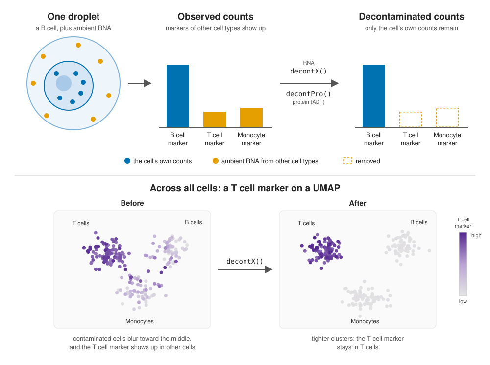

Methods for decontamination of single cell data. This package implements both DecontX (Yang et al., 2020) for single-cell RNA-seq data and DecontPro (Yin et al., 2024) for single-cell protein expression data.

Installation Instructions
You can install the package through Bioconductor with:
if (!require("BiocManager", quietly = TRUE))
install.packages("BiocManager")
BiocManager::install("decontX")Alternatively, install the development version from the devel branch on GitHub using the devtools package. Without ref = "devel", install_github() installs the current release instead:
# install.packages("devtools")
devtools::install_github("campbio/decontX", ref = "devel")Usage
DecontX takes a count matrix or a SingleCellExperiment with genes in rows and cells in columns. A minimal example on simulated data:
library(decontX)
# Simulate a contaminated count matrix with 300 cells
sim <- simulateContamination(seed = 12345)
# Estimate and remove the contamination
result <- decontX(sim$observedCounts)
# The proportion of contamination in each cell, between 0 and 1
head(result$contamination)
# The decontaminated counts
decontaminated <- result$decontXcountsThe vignettes show the full workflow, including a SingleCellExperiment, cluster labels, empty droplets, and plots of the results.
Documentation
The package website, https://campbio.github.io/decontX/, has the vignettes and the help pages of every function for the current Bioconductor release. The development version’s site is at https://campbio.github.io/decontX/dev/.
Vignettes
Vignettes are available on Bioconductor:
- Getting started: an overview of DecontX and DecontPro, with a quick example.
- decontX (RNA): the DecontX workflow for single-cell RNA-seq data.
- decontPro (Protein): the DecontPro workflow for CITE-seq ADT data.
To build the vignettes when installing from GitHub, add the flag build_vignettes = TRUE:
library(devtools)
install_github("campbio/decontX", ref = "devel", build_vignettes = TRUE)Then vignettes can be accessed through:
Citation
Please cite the method you used:
- DecontX, for single-cell RNA-seq: Yang S, Corbett SE, Koga Y, Wang Z, Johnson WE, Yajima M, Campbell JD (2020). Decontamination of ambient RNA in single-cell RNA-seq with DecontX. Genome Biology, 21(1), 57. https://doi.org/10.1186/s13059-020-1950-6
- DecontPro, for single-cell protein expression data: Yin Y, Yajima M, Campbell JD (2024). Characterization and decontamination of background noise in droplet-based single-cell protein expression data with DecontPro. Nucleic Acids Research, 52(1), e4. https://doi.org/10.1093/nar/gkad1032
In R, citation("decontX") prints both references.